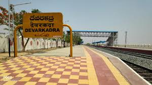
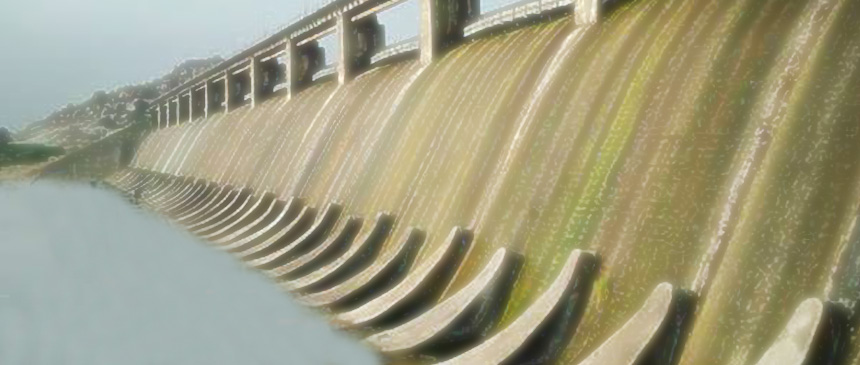

Devarkadra
It is Beatuful Village
About
Devarkadra
Devotional Places
Education Details
Employment Details
Near By Visting Places
It is in Mahabubnagar Dist. To reach we have
Railway Sation, Bus Station, From Airport 80 KMs
Devarkadra is an Assembly constituency
My Village pics
 
Devarkadra,Mahabubnagar,Telngana,India,PinCode-
509204